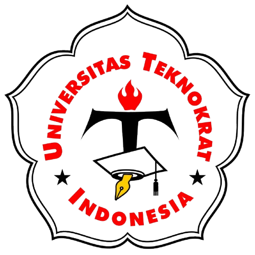
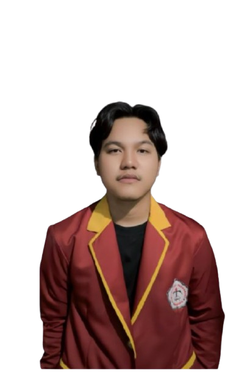
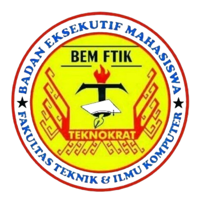
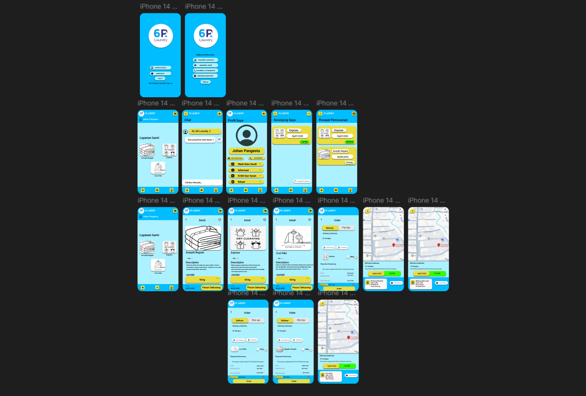

UNIVERSITAS TEKNOKRAT INDONESIA
S1 Informatika · Semester 7
NPM: 23312122
Fokus Studi: Rekayasa Perangkat Lunak, Pengembangan Web, dan Desain.
Halo, saya
Mahasiswa semester 7 S1 Informatika di Universitas Teknokrat Indonesia dengan ketertarikan pada pengembangan perangkat lunak, UI/UX, serta pembuatan konten visual dan multimedia. Aktif dalam organisasi kampus di bidang media informasi, dengan pengalaman dalam pemrograman, desain grafis, dan penyuntingan video.


S1 Informatika · Semester 7
NPM: 23312122
Fokus Studi: Rekayasa Perangkat Lunak, Pengembangan Web, dan Desain.
Figma — UI/UX Design, Wireframing, Prototyping. Canva — desain grafis dan presentasi.
CapCut, Adobe Premiere Pro, penyuntingan video dan konten kreatif untuk media sosial.
Kerja tim, manajemen waktu, komunikasi efektif, dan pemecahan masalah.

Anggota Aktif — Kepala Divisi Media Informasi | 2024 – Sekarang

Laundry 6R UI / UX
Desain aplikasi laundry dan alur pemesanan.Social Media Kit Design
Video & Multimedia Editing
Proyek Social Media Kit dan Video Editing merupakan contoh konsep. Ganti dengan karya asli saat tersedia.
Terbuka untuk kesempatan magang, kolaborasi, dan proyek kreatif.
Bandar Lampung, Indonesia · 0887-7823-386